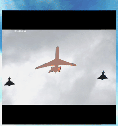
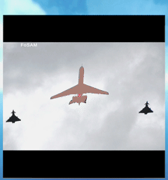
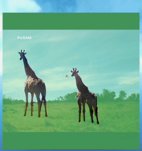
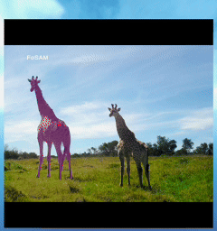
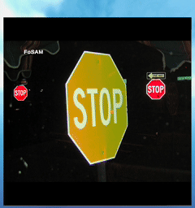
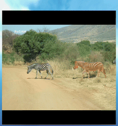
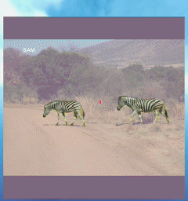
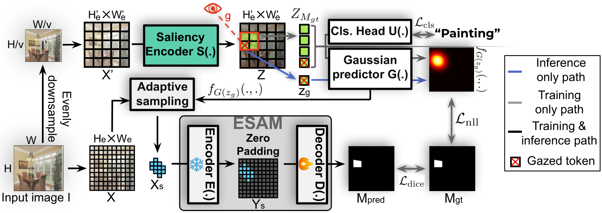

Abstract
Augmented Reality (AR) encompasses transformative technologies that are redefining how humans interact with their environment. A key component of AR is image segmentation, which breaks down the user's front-view scene into distinct regions for analysis. This process is essential for accurately overlaying digital content onto the physical world by detecting and isolating relevant objects. However, despite its importance, image segmentation poses significant computational demands and latency issues on AR devices, which can severely impact the overall user experience. In this paper, we propose Foveated Segment Anything Model (FoSAM), a framework built upon the Segment Anything Model (SAM) that utilizes real-time gaze data to focus segmentation on regions of interest, substantially lowering computational cost. Experimental results show that FoSAM reduces computational cost by over 50×, enabling a seamless visual experience for users, as confirmed by our real-world user study.
Demo Video

FoSAM in User Study - demonstrating efficient instance segmentation based on user gaze.
Comparison: FoSAM vs SAM
Below are comparisons showing the runtime efficiency of FoSAM compared to SAM:

FoSAM: Airplane Segmentation

SAM: Airplane Segmentation

FoSAM: Giraffe Segmentation

SAM: Giraffe Segmentation

FoSAM: Sign Segmentation
SAM: Sign Segmentation

FoSAM: Horse Segmentation

SAM: Horse Segmentation
Framework Overview

Figure 1: Overview of the FoSAM framework, showing the gaze-guided saliency encoder that enables efficient processing.
FoSAM significantly reduces the computational requirements of image segmentation in AR environments by focusing processing only on areas where the user is looking. The framework leverages natural human eye behavior to prioritize segmentation on the instance of interest (IOI) while ignoring peripheral regions.
Main Contributions
- Novel Perspective on Instance Segmentation: We introduce a new approach to segmentation that exploits human eye behavior to reduce computational costs in AR settings.
- Lightweight Segmentation Framework: FoSAM is built on ESAM and processes high-resolution input images while performing instance segmentation on the IOI with extremely low computational cost.
- Streaming Algorithm for Real-time Applications: The FoSAM Streaming Algorithm (FSA) exploits temporal continuity across frames and human gaze patterns to optimize segmentation, delivering enhanced performance in dynamic AR environments.
Experimental Results
| Method | K | ADE20K | LVIS | Cityscape | GFLOP |
|---|---|---|---|---|---|
| SAM-B | 4096 | 0.511 | 0.537 | 0.347 | 744 |
| ESAM-S | 4096 | 0.411 | 0.359 | 0.304 | 188.2 |
| ESAM-T | 4096 | 0.350 | 0.236 | 0.248 | 56.1 |
| SlimSAM-S | 4096 | 0.477 | 0.474 | 0.293 | 15.1 |
| SlimSAM-T | 4096 | 0.461 | 0.458 | 0.263 | 11.0 |
| FSNet-DL | NA | 0.34 | 0.38 | 0.24 | 18.8 |
| FSNet-SF | NA | 0.33 | 0.36 | 0.21 | 12.6 |
| FoSAM-S | 200 | 0.495 | 0.487 | 0.404 | 14.6 |
| FoSAM-S | 100 | 0.465 | 0.461 | 0.362 | 10.4 |
| FoSAM-T | 200 | 0.471 | 0.469 | 0.377 | 7.4 |
| FoSAM-T | 100 | 0.457 | 0.435 | 0.328 | 5.3 |
K denotes the token budget. FoSAM consistently outperforms competitive methods while requiring significantly fewer computational resources.
Processing Latency
| Model | Token Budget | Latency (ms) |
|---|---|---|
| FoSAM-S | 200 | 21.6 |
| FoSAM-S | 100 | 18.3 |
| FoSAM-T | 200 | 17.6 |
| FoSAM-T | 100 | 14.5 |
FoSAM achieves latencies well below the 30ms threshold required for seamless AR experiences.
User Study
Our user study involving 7 participants showed that FoSAM was preferred in 96.9%±4.8% of trials over traditional SAM, demonstrating the real-world benefits of our approach for AR applications.